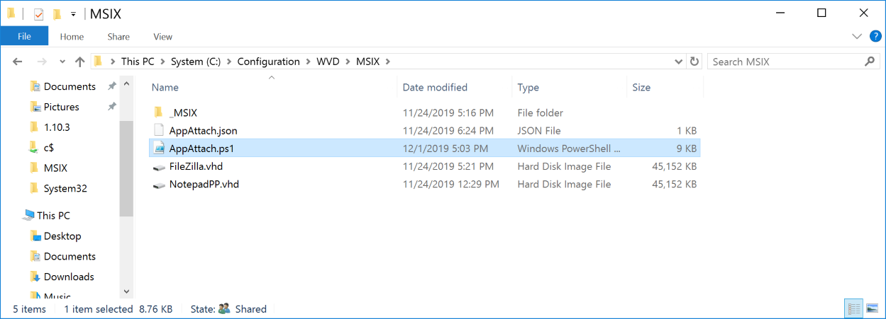
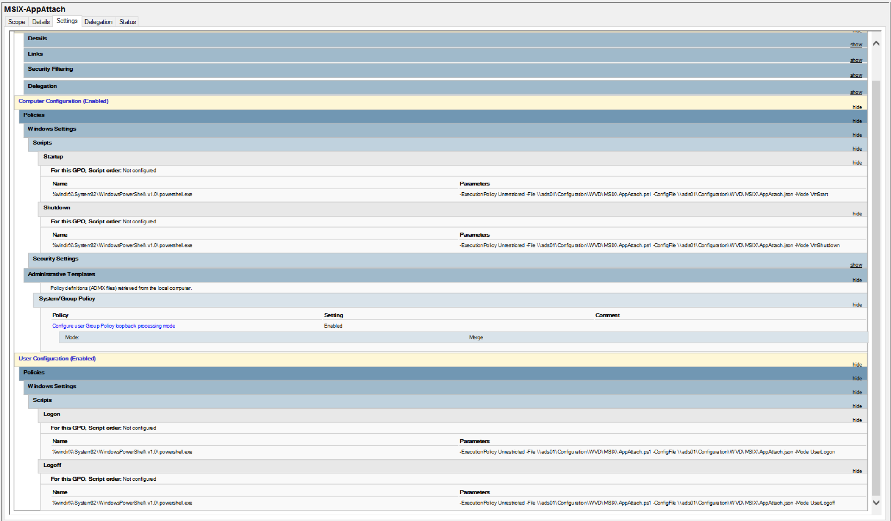
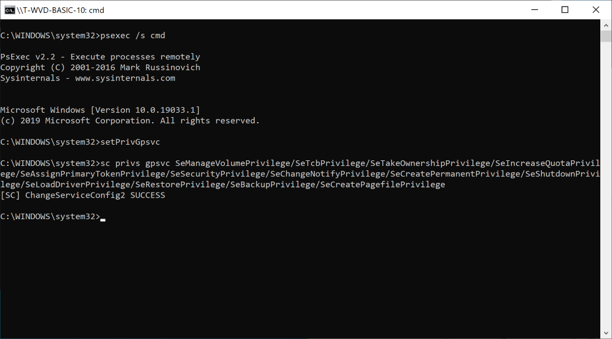
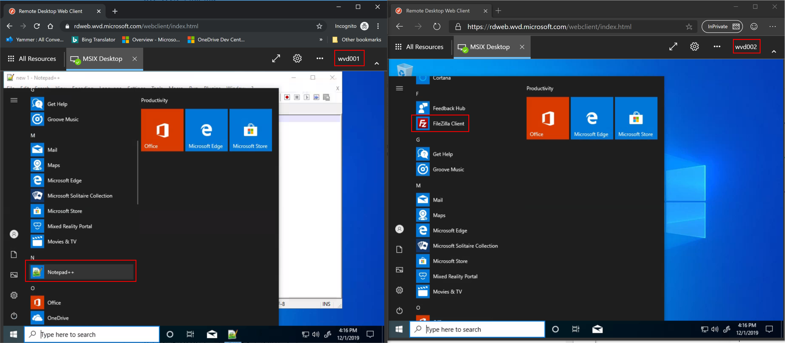

Automatic MSIX App Attach script for Windows Virtual Desktop
Automatic MSIX App Attach script for WVD 
Microsoft provides a preview of MSIX app attach for Windows Virtual desktop. MSIX app attach gives you the possibility to only have a few amounts of images and connect your application to them - without installing. That sounds a little bit like App-V, and from a user perspective, this is slightly comparable:
You cannot see the application in the file system from outside the app. If you open the app and if you browse to the application folder, you can see this folder. The attaching and links in the start menu “feels” like the use of modern apps from the marketplace. And indeed: The application links in the start menu didn’t refer to the exe-files in the program folder.
Configuration of the MSIX packages and assignments
If you are in the Windows Insider program, you can test MSIX app attach in a WVD environment. To do this go to the web site https://docs.microsoft.com/en-us/azure/virtual-desktop/app-attach which explains the process of preparing your Windows insider image and how to stage and register MSIX apps for session hosts und users. If you convert legacy apps to MSIX I recommend the YouTube video of @MSAzureAcademy: https://www.youtube.com/watch?v=6kkPLFgPaN8
Microsoft gives you example scripts to stage, un-stage, register, and un-register MSIX apps. For each app, you have to build these four scripts. While the scrips only differ in a few points, I decided to create one script which does the necessary things for all apps I want to provide.
The result is one folder containing a single PowerShell script and a configuration file for my MSIX apps. The structure of the configuration is JSON:
{
"apps":[
{
"vhdSrc":"\\\\ads01\\Configuration\\WVD\\MSIX\\NotepadPP.vhd",
"volumeGuid":"9c371391-0000-0000-0000-010000000000",
"packageName":"notepadpp_7.8.1.0_x64__cqx7y23m1rjgy",
"parentFolder":"MSIX-Apps",
"sessionTarget":{
"hostPools":[
"MSIX-Builder"
],
"userGroups":[
"SW_WVD_All",
"SW_WVD_NotePadPP"
]
}
},
{
"vhdSrc":"\\\\ads01\\Configuration\\WVD\\MSIX\\FileZilla.vhd",
"volumeGuid":"2ac99dec-0000-0000-0000-010000000000",
"packageName":"filezilla_3.45.1.0_x64__cqx7y23m1rjgy",
"parentFolder":"MSIX-Apps",
"sessionTarget":{
"hostPools":[
"MSIX-Builder"
],
"userGroups":[
"SW_WVD_All",
"SW_WVD_FileZilla"
]
}
}
]
}
For each application, you have to define the following properties:
| Property | Note |
|---|---|
| vhdSrc | Path to the expanded MSIX app (as vhd) |
| volumeGuid | Guid of the vhd |
| packageName | Name of the MSIX app attach package |
| parentFolder | Root folder name in your vhd |
| hostPools | List of host pool names where the package should be applied |
| userGroups | List of AD groups: Members get the application linked in their start menu |
Providing the script to users and session hosts
Provide the script AppAttach with the configuration in a folder of a shared network drive. This folder must be readable for all users.

Refer this file by a group policy:
Computer Configuration - Policies - Windows Settings - Scripts - Startup
Name: %windir%\System32\WindowsPowerShell\v1.0\powershell.exe
Parameter: -ExecutionPolicy Unrestricted -File \\ads01\Configuration\WVD\MSIX\AppAttach.ps1 -ConfigFile \\ads01\Configuration\WVD\MSIX\AppAttach.json -Mode VmStart
Computer Configuration - Policies - Windows Settings - Scripts - Shutdown
Name: %windir%\System32\WindowsPowerShell\v1.0\powershell.exe
Parameter: -ExecutionPolicy Unrestricted -File \\ads01\Configuration\WVD\MSIX\AppAttach.ps1 -ConfigFile \\ads01\Configuration\WVD\MSIX\AppAttach.json -Mode VmShutdown
User Configuration - Policies - Windows Settings - Scripts - Logon
Name: %windir%\System32\WindowsPowerShell\v1.0\powershell.exe
Parameter: -ExecutionPolicy Unrestricted -File \\ads01\Configuration\WVD\MSIX\AppAttach.ps1 -ConfigFile \\ads01\Configuration\WVD\MSIX\AppAttach.json -Mode UserLogon
User Configuration - Policies - Windows Settings - Scripts - Logoff
Name: %windir%\System32\WindowsPowerShell\v1.0\powershell.exe
Parameter: -ExecutionPolicy Unrestricted -File \\ads01\Configuration\WVD\MSIX\AppAttach.ps1 -ConfigFile \\ads01\Configuration\WVD\MSIX\AppAttach.json -Mode UserLogoff
Where \\ads01\Configuration\WVD\MSIX\ is the path to the script and \\ads01\Configuration\WVD\MSIX\AppAttach.json the JSON-configuration file.
Make sure that the GPO is linked to the computer and enable loopback processing:
Computer Configuration - Policies - Administrative Templates - System/Group Policy
Configure user Group Policy loopback processing mode: Enable - Mode: merge.

Preparing the golden master for the session hosts
To work with MSIX and have the script do the work you have to prepare your golden image:
-
Make sure that you have installed the right version from the insider build
-
Double-check that you have NOT prepared your image with the command line commands described in https://docs.microsoft.com/en-us/azure/virtual-desktop/app-attach#prepare-the-vhd-image-for-azure (Disable Store auto-update and so on). It’s only for the VM concerning the converting process.
-
Copy the PSTools https://docs.microsoft.com/en-us/sysinternals/downloads/psexec to %Windir%\System32 (you need psexec later)
-
Give the service GPSVC the right privileges to mount images:
-
-
Create a cmd-file with this content:
>sc privs gpsvc SeManageVolumePrivilege/SeTcbPrivilege/SeTakeOwnershipPrivilege/SeIncreaseQuotaPrivilege/SeAssignPrimaryTokenPrivilege/SeSecurityPrivilege/SeChangeNotifyPrivilege/SeCreatePermanentPrivilege/SeShutdownPrivilege/SeLoadDriverPrivilege/SeRestorePrivilege/SeBackupPrivilege/SeCreatePagefilePrivilege -
Open an administrative cmd and execute:
psexec /s cmd
-
In this service cmd execute the cmd-file to give GPSVC the right permissions
(This adds the SeManageVolumePrivilege which allows mounting of images)
-

If you have this done, you can rollout several session hosts (or start with one for testing). If you now log on with different users, each user will see its assigned applications.

Note: If a user logoff the application will be de-registered except if the user an administrator (this will be skipped to avoid unmounting the app package).
Download the script and rename it to AppAttach.ps1